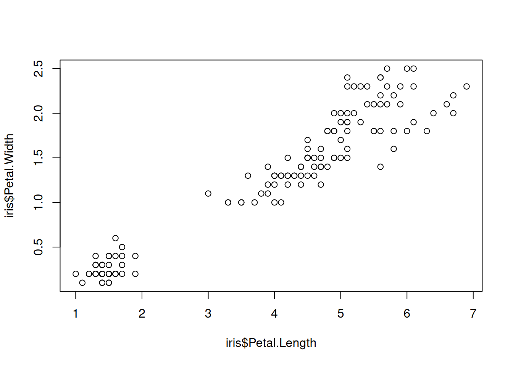
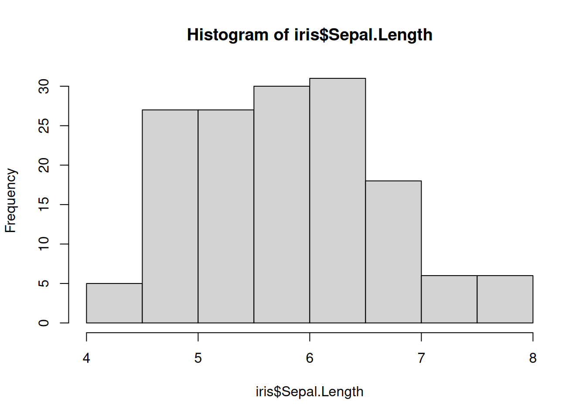
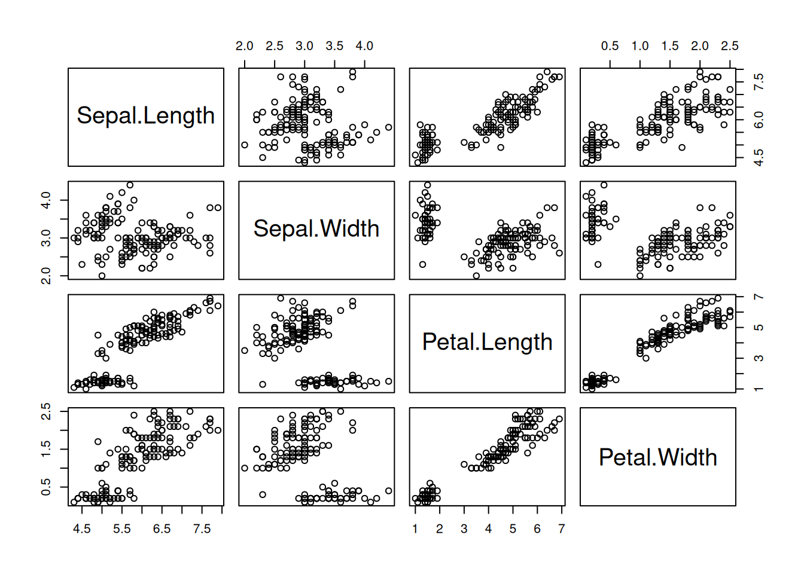
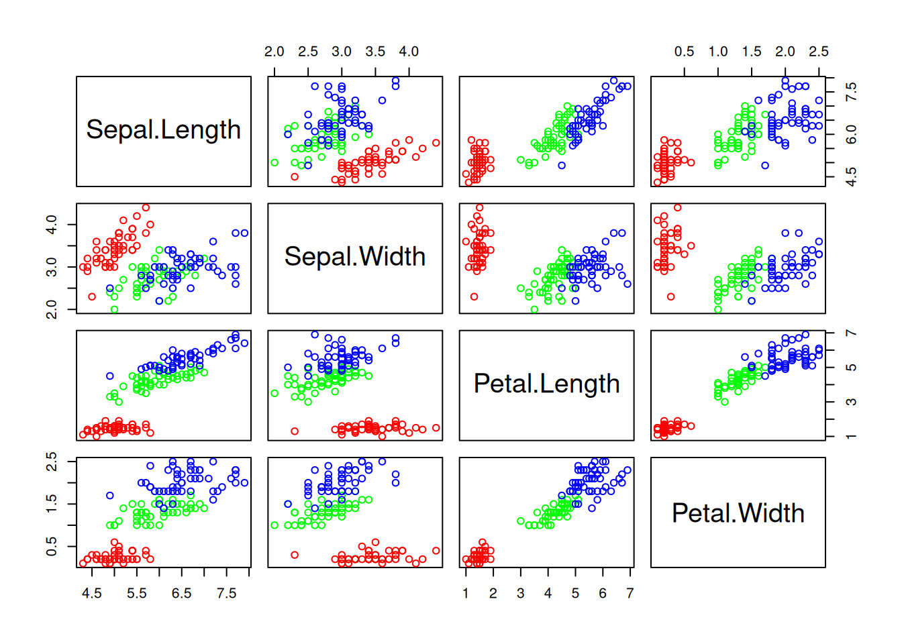
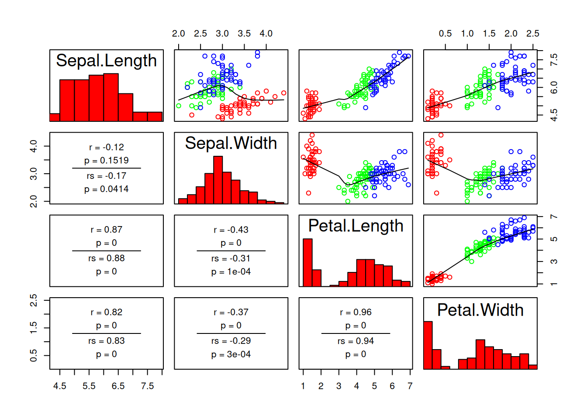
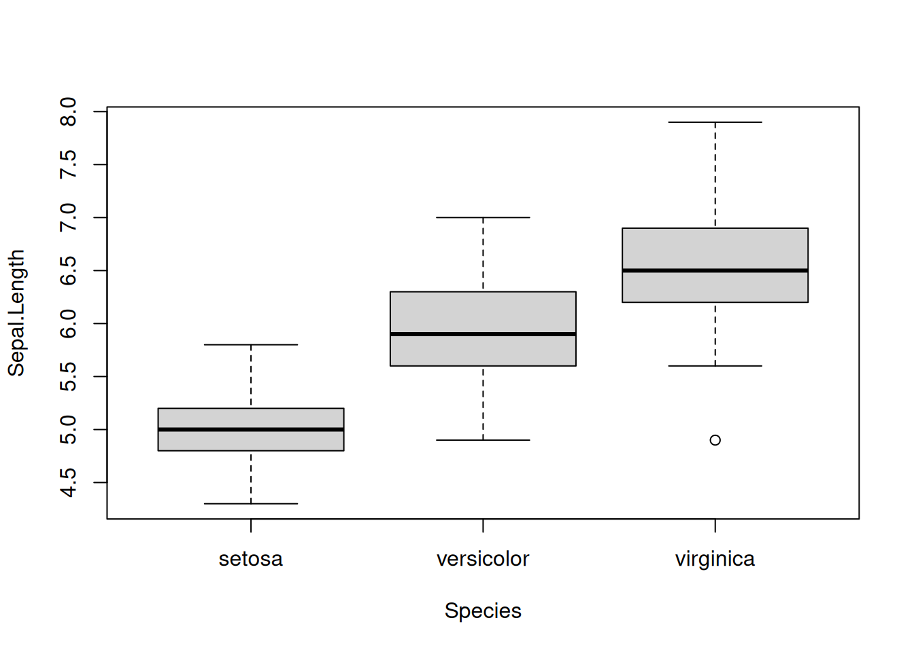
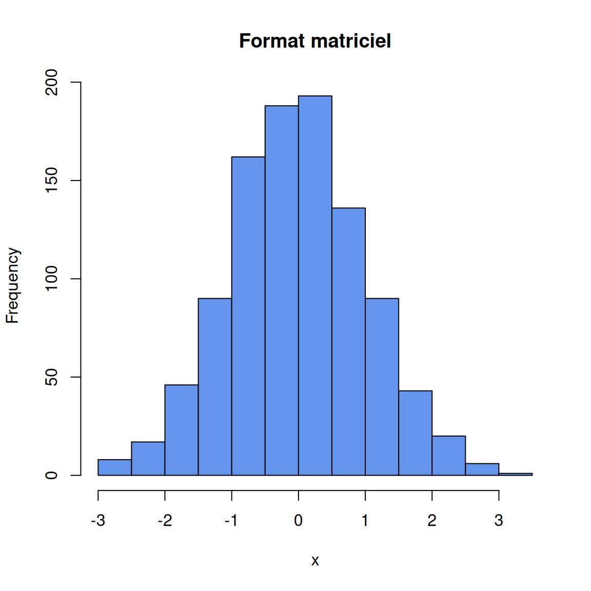
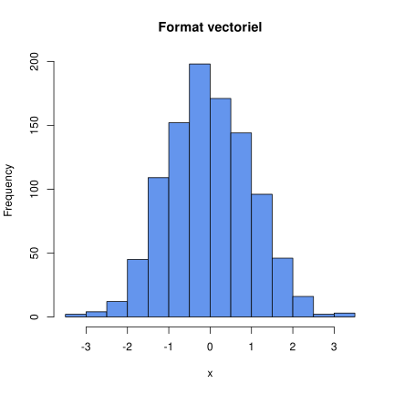

plot(iris$Petal.Length, iris$Petal.Width)
À la fin de cette capsule, vous serez en mesure de:
Télécharger le script R de la vidéo (Faire bouton droit -> enregistrer sous…)
Veuillez noter qu’il est possible d’avoir plus d’une bonne réponse par question.
Il est possible de faire un graphique nuage de points en utilisant cette commande:
plot(iris$Petal.Length, iris$Petal.Width)
Refaites le même graphique mais en utilisant la notation par formule.
Pensez à utiliser le caractère ~ pour la notation par formule.
plot(Petal.Width ~ Petal.Length, data = iris)Lorsqu’on se familiarise avec un jeu de données que l’on vient d’obtenir, il est important de l’explorer pour détecter les erreurs qui peuvent s’être glissées lors de la saisie des données dans le fichier. Comme les humains sont visuels et qu’une image vaut mille mots, il est pratique d’utiliser la visualisation graphique pour explorer l’étendue de ces données, comment elles se comparent entre différents groupes et s’il y a des variables qui sont potentiellement corrélées.
L’un des nombreux avantages de R est qu’il permet de créer des graphiques de haute qualité. Le tableau suivant présente les quatre types de graphiques fréquemment utilisés en biologie.
| Fonction | Description |
|---|---|
hist(x) |
Histogramme de la variable continue x. |
plot(x, y) |
Nuage de points de la relation entre x (abscisse) et y (ordonnées). |
pairs(df) |
Permets de visualiser la relation entre toutes les variables continues d’une structure de données (tableau de données data frame). |
barplot(x) |
Diagramme à bâtons du décompte de la variable x. |
boxplot(x) |
Diagramme à boîte à moustaches de la variable continue x. |
Nous utiliserons un jeu de données biologiques intéressant afin de présenter les fonctions de base de chacun de ces types de graphiques. En effet, R contient des jeux de données qui ont été créés et intégrés à la version de base afin de nous permettre de tester ses différentes fonctions. Nous utiliserons le jeu de données iris qui contient de véritables mesures morphologiques sur trois espèces d’Iris (des fleurs), récoltées par le biologiste Edgar Anderson. Ce jeu de données est d’autant plus intéressant pour nous que deux des trois espèces étudiées proviennent de la Gaspésie (incluant l’emblème floral du Québec, l’Iris versicolor). Ce jeu de données est aussi très connu, car il a été utilisé par Ronald Fisher, un des pères fondateurs de la biostatistique, dans un de ses articles scientifiques.
On importe le jeu de données avec la fonction data().
data(iris)On peut utiliser la fonction head() pour vérifier le contenu de notre jeu de données.
head(iris)Nous avons 4 variables morphologiques mesurées en centimètres (Sepal.Length, Sepal.Width, Petal.Length et Petal.Width) ainsi qu’une variable indiquant l’espèce d’iris (Species). Nous utilisons la fonction str() afin d’avoir des informations sur cet objet.
str(iris)'data.frame': 150 obs. of 5 variables:
$ Sepal.Length: num 5.1 4.9 4.7 4.6 5 5.4 4.6 5 4.4 4.9 ...
$ Sepal.Width : num 3.5 3 3.2 3.1 3.6 3.9 3.4 3.4 2.9 3.1 ...
$ Petal.Length: num 1.4 1.4 1.3 1.5 1.4 1.7 1.4 1.5 1.4 1.5 ...
$ Petal.Width : num 0.2 0.2 0.2 0.2 0.2 0.4 0.3 0.2 0.2 0.1 ...
$ Species : Factor w/ 3 levels "setosa","versicolor",..: 1 1 1 1 1 1 1 1 1 1 ...Nous apprenons que nous avons 150 observations dans notre tableau (data frame). Les données sur les sépales et les pétales sont numériques (numeric) alors que la variable décrivant les espèces est un facteur (factor).
Les histogrammes permettent de visualiser la distribution de fréquence d’une variable continue, comme on vient de le voir. La fonction de base pour créer un histogramme est hist(x) où x est un vecteur de valeurs numériques. Dans le cas de nos iris, toutes les variables morphologiques sont des données continues et peuvent donc être représentées à l’aide d’un histogramme. Si on visualise la longueur des sépales:
# Créer un histogramme de la longueur des sépales
hist(iris$Sepal.Length)
Les sépales des 3 espèces confondues ont des longueurs incluses dans les classes de taille allant de 4 à 8 centimètres. La distribution est unimodale, c.-à-d. qu’elle est symétrique autour d’un seul pic d’abondance de données. Ce mode correspond à la classe de taille 6 à 6.5 cm. L’un des avantages des histogrammes est qu’ils permettent de rapidement identifier les valeurs aberrantes dans un jeu de données. Une valeur aberrante (outlier) est une valeur qui s’éloigne beaucoup des autres; elle peut être tout à fait justifiée (par exemple une brève et intense vague de chaleur dans une série temporelle de températures de l’air) ou le résultat d’un défaut de fonctionnement d’un appareil, d’une erreur d’interprétation ou de transcription humaine, etc. Dans notre série de mesures de sépales, il ne semble pas y avoir de valeur aberrante.
Nous allons voir un excellent exemple de graphique qui permet de détecter une erreur humaine à l’aide du fichier de données BIO1006_H2018_Echantillon.csv qui présente le résultat d’un sondage effectué dans le cours de biostatistiques BIO-1006 du programme de baccalauréat en Biologie de l’Université Laval. Ce fichier peut-être téléchargé depuis la section Téléchargement.
La première étape consiste à ouvrir le fichier en utilisant la fonction read.csv().
sondage_bio1006 <- read.csv("../data/BIO1006_H2018_Echantillon.csv")sondage_bio1006 <- read.csv("../data/BIO1006_H2018_Echantillon.csv")
head(sondage_bio1006)N’oubliez de changer le chemin d’accès pour lire le fichier BIO1006_H2018_Echantillon.csv qui se trouve sur votre ordinateur.
L’histogramme suivant montre l’étendue des valeurs de la variable taille_cm.
# Visualiser la distribution de fréquence des valeurs de la taille
hist(sondage_bio1006$taille_cm)
Dans ce cas-ci, on voit bien qu’il y a une valeur de taille qui est beaucoup plus petite que les autres. En effet, on remarque qu’il y a une valeur de 1.53 qui a probablement été écrite par une personne qui pensait que la mesure était en mètres plutôt qu’en centimètres. On peut aussi vérifier l’étendue des données de taille à l’aide de la fonction range().
# Vérifier l’étendue des données de taille
range(sondage_bio1006$taille_cm)[1] 1.53 195.68On peut maintenant refaire l’histogramme en supprimant cette valeur aberrante. Pour y arriver, nous pouvons utiliser la fonction subset() comme suit: utilisez la fonction d’aide help(subset) afin d’en apprendre plus sur cette fonction.
# Supprimer la ligne du tableau de données qui contient la valeur aberrante
sondage_bio1006 <- subset(sondage_bio1006, taille_cm > 100)
# Refaire l'histogramme avec les nouvelles données
hist(sondage_bio1006$taille_cm)
Les graphiques en nuage de points (scatterplot) permettent de visualiser la relation entre deux variables. ON est en effet en mesure de voir si cette relation est présente ou non, si elle est positive ou négative et si elle est linéaire ou non. La fonction de base en R pour créer ce type de graphique est plot(). Cette fonction demande au minimum deux paramètres: les valeurs en abscisse x et les valeurs en ordonnées y. La ligne de code suivante créer un graphique en nuage de points présentant la relation entre la longueur des pétales Petal.Length sur l’axe des x et la largeur de ceux-ci, Petal.Width sur l’axe des y, à partir du jeu de données iris.
# Créer un graphique en nuage de points avec les données iris de la longueur des
# pétales et la largeur de ceux-ci
plot(iris$Petal.Length, iris$Petal.Width)
En visualisant les données, on voit que ces deux mesures morphologiques semblent co-varier positivement et de façon linéaire pour l’ensemble du jeu de données sur ces trois espèces d’iris. Nous verrons dans une autre capsule comment modifier ce graphique, car de nombreux points de données ne sont pas visibles en ce moment et les trois espèces ne peuvent pas être distinguées.
Il est également possible de créer ce graphique en utilisant la notation par formule. L’un des avantages de cette méthode est de simplifier l’écriture du code en utilisant le caractère ~ (tilde). Dans R, lorsque vous voyez ce caractère, vous devriez lire en fonction de. Ceci implique que la variable qui sera sur l’axe des y (en ordonnées) est nommée en premier.
Dans l’exemple suivant, le même graphique est reproduit en illustrant la largeur des pétales en fonction de la longueur de ceux-ci. Notez qu’avec cette forme, il n’est pas nécessaire d’écrire le nom du tableau de données suivi du signe $ puisqu’on le précise en utilisant le paramètre data = de la fonction plot(). Cette ligne de commande peut être lue comme suit: “faire un graphique en nuage de points de la variable Petal.Width en fonction de la variable Petal.Length qui sont contenues dans le tableau de données iris.”
# Faire un graphique en nuage de points de la variable Petal.Width en fonction de
# la variable Petal.Length qui sont contenues dans le data frame iris
plot(Petal.Width ~ Petal.Length, data = iris)
La seule différence avec le graphique précédent est le nom des axes. Dans la seconde version (avec formule), le nom du tableau de données n’est pas indiqué, seuls les noms des variables sont visibles.
Les graphiques en paires permettent de visualiser rapidement la relation entre toutes les variables continues du jeu de données grâce à la fonction pairs(). Dans notre jeu de données des iris, 4 des cinq variables peuvent être visualisées l’une par rapport à l’autre. Ici on spécifie donc de ne pas utiliser la colonne 5 qui contient la seule variable qui n’est pas continue, car elle contient le nom des espèces de fleurs; c’est une variable de classe factor et non numeric1.
# Faire des graphiques en pair pour toutes les colonnes sauf la 5ième
pairs(iris[-5])
Les carrés contenant le nom des variables nous indiquent quelles données sont sur l’axe des x et des y dont ils forment l’intersection. Une variable est représentée sur sur l’axe des x sur la colonne où elle se trouve et sur l’axe des y sur la ligne où on la trouve. Si on regarde le premier graphique en haut à gauche (première colonne, deuxième ligne), il illustre comment la longueur des sépales (Sepal.Length) sur l’axe des abscisses (car c’est le titre de la colonne 1) covarie avec la largeur des sépales (Sepal.Width) sur l’axe des ordonnées (car c’est le titre de la ligne 2). De même, le graphique que nous avons créé précédemment avec la fonction plot() est représenté en bas à droite (troisième colonne, quatrième ligne), avec les variables Petal.Length en abscisses (titre de la colonne = axe des x) et Petal.Width en ordonnées (titre de la ligne = axe des y).
Le jeu de données du botaniste Edgar Anderson porte sur 3 espèces. Il serait donc intéressant de pouvoir visualiser les 3 espèces d’iris séparément, ce qu’on peut faire en spécifiant la couleur à donner aux valeurs pour chaque espèce.
# Donner une couleur rouge, verte ou bleue à chaque espèce
cols <- c("red", "green", "blue")
# Refaire le graphique avec ces couleurs
pairs(iris[-5], col = cols[iris$Species])
La variable Species étant de classe factor, les trois couleurs fournies dans le vecteur cols sont indexées selon la valeur de l’espèce, qui pour R se résume à 3 catégories! Les espèces sont maintenant illustrées en rouge, vert ou bleu. Tout d’un coup, on voit que la relation entre deux mesures morphologiques est très différente selon l’espèce d’iris.
La librairie languageR et sa fonction pairscor.fnc() offre une version améliorée de la fonction pairs(). Cette fonction permet à la fois d’obtenir les histogrammes, les graphiques en pairs ainsi que les coefficients de corrélation Pearson et Spearman.
La librairie languageR n’est pas installée dans la version de base de R. Vous devrez l’installer vous-même2.
# Charger la librairie dans R pour l’utiliser
library(languageR)
# Faire un graphique de type "paire" avec cette librairie
pairscor.fnc(iris[-5], col.points = cols[iris$Species])Warning in graphics::par(usr): argument 1 does not name a graphical parameter
Warning in graphics::par(usr): argument 1 does not name a graphical parameter
Warning in graphics::par(usr): argument 1 does not name a graphical parameter
Warning in graphics::par(usr): argument 1 does not name a graphical parameter
Warning in graphics::par(usr): argument 1 does not name a graphical parameter
Warning in graphics::par(usr): argument 1 does not name a graphical parameter
Warning in graphics::par(usr): argument 1 does not name a graphical parameter
Warning in graphics::par(usr): argument 1 does not name a graphical parameter
Warning in graphics::par(usr): argument 1 does not name a graphical parameter
Warning in graphics::par(usr): argument 1 does not name a graphical parameter
Les diagrammes à bâtons (barplots en anglais) permettent de représenter des données catégorielles avec des barres rectangulaires dont les hauteurs sont proportionnelles aux fréquences qu’elles représentent (nombre d’observations pour chaque catégorie). Les diagrammes à bâtons sont souvent utilisés conjointement avec la fonction table() qui permet de faire la classification croisée d’une variable pour créer un tableau de contingence selon les combinaisons possibles. Dans l’exemple suivant, nous voulons faire un diagrammes à bâtons de la variable peur_des_biostats contenu dans le tableau de données sondage_bio1006. La première étape consiste à dénombrer combien il y a d’observations pour chacune des réponses possibles (Non, Oui, Pas_sur).
# Faire le décompte de chaque réponse
counts <- table(sondage_bio1006$peur_des_biostats)
# Voir le tableau de décompte
counts
Non Oui Pas_sur
22 10 27 Pour faire un diagramme à bâtons, il suffit d’utiliser la fonction barplot() avec la variable counts qui contient le résultat de notre décompte.
# Faire un diagramme en bâton avec les valeurs du décompte
barplot(counts)
Avec la fonction table(), il est également possible de faire un décompte croisé, c’est à dire selon plusieurs variables à la fois. Dans l’exemple suivant, nous faisons un décompte du nombre d’observations Face et Pile en groupant par genre et piece_monnaie. On peut ainsi constater immédiatement que les nombres de résultats Face et Pile sont presque égaux (comme on peut s’y attendre) aussi bien pour les Filles que les Gars.
# Faire un décompte croisé avec deux variables
counts <- table(sondage_bio1006$genre, sondage_bio1006$piece_monnaie)
# Voir le tableau de décompte croisé
counts
Face Pile
Fille 20 22
Gars 8 9Le diagramme à bâton illustre de façon claire cette observation obtenue avec la fonction table(). Les paramètres legend.text = rownames(counts) et beside = TRUE servent à créer la légende à partir du nom des lignes et à placer les barres côte à côte, respectivement.
barplot(counts, legend.text = rownames(counts), beside = TRUE)
Vous pouvez consulter la seconde capsule sur les graphiques pour en apprendre plus sur la modification de l’apparence des graphiques.
Les diagrammes en boîte à moustaches (boxplot, en anglais) offrent une représentation graphique permettant de visualiser la médiane et les quartiles inférieurs (< 25%) et supérieurs (> 75%) d’une variable. Les valeurs extrêmes de la distribution sont représentées par des points au-delà des “moustaches” (ce ne sont pas nécessairement des valeurs aberrantes!). À l’aide de la représentation par formule vue précédemment, il est possible de grouper les données selon une variable catégorielle (de classe factor) et de comparer ces valeurs de médiane et de quartiles pour deux groupes ou plus. Dans l’exemple suivant, un graphique de type diagramme à boîte présente la distribution de la longueur des sépales (Sepal.Length) en fonction de l’espèce d’iris (Species).
# Visualiser la distribution de la longueur des sépales en fonction de l’espèce d’iris
boxplot(Sepal.Length ~ Species, data = iris)
La distribution des valeurs de la longueur des sépales semble différer entre les trois espèces (setosa, versicolor et virginica). Nous pourrions utiliser une analyse de variance (ANOVA) pour déterminer statistiquement si cette différence est significative3.
À un certain moment pendant vos analyses, il vous faudra exporter vos graphiques pour les partager avec votre équipe ou votre superviseur, les inclure dans vos rapports de travaux pratiques ou les projeter pour une présentation orale. Il existe deux grandes familles d’images.
La plupart des journaux scientifiques préfèrent le format vectoriel lors du processus de soumission d’un article, car ce format de graphique a une meilleure qualité comparée au format matriciel et il peut s’agrandir indéfiniment sans perte de résolution (qualité). Les deux figures suivantes permettent de comparer la qualité graphique des formats jpeg (format matriciel) et pdf (format vectoriel). On voit qu’il y a de la pixellisation dans la version matricielle tandis que la version vectorielle est nettement plus claire. Si vous devez néanmoins utiliser le format matriciel, on vous recommande d’utiliser le format png qui offre un bon compromis entre la qualité de l’image et la taille de fichier.


Dans R, pour exporter un graphique, il faut au minimum trois étapes:
Les lignes de code suivantes permettent de créer un simple graphique et de le sauvegarder dans un fichier pdf.
# Ouvrir le moteur graphique
pdf(file = "/emplacement/nom_du_fichier.pdf")
# Faire le graphique
plot(1)
# Fermer le moteur graphique
dev.off()Plutôt que d’exporter en format pdf, nous pourrions utiliser la fonction png() pour créer un graphique au format png.
# Ouvrir le moteur graphique
png(file = "/emplacement/nom_du_fichier.png")
# Faire le graphique
plot(1)
# Fermer le moteur graphique
dev.off()Le matériel pédagogique utilisé dans cette capsule est disponible pour le téléchargement sous deux formats différents:
Pour télécharger le fichier localement sur votre ordinateur, tablette ou téléphone portable, il suffit de cliquer sur le lien désiré avec le bouton droit de votre souris et choisir “sauvegarder sous…”.
Vous pouvez aussi télécharger le fichier BIO1006_H2018_Echantillon.csv qui contient les données utilisées dans cette capsule.